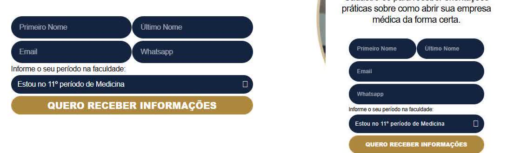

<title>Auditoria Liga ForDoctor</title>
<link rel="preconnect" href="https://fonts.googleapis.com">
<link rel="preconnect" href="https://fonts.gstatic.com" crossorigin>
<link rel="stylesheet" href="https://fonts.googleapis.com/css2?family=Dosis:wght@500;600;700&family=Jost:ital,wght@0,400;0,500;0,600;1,400&family=IBM+Plex+Mono:wght@400;500&display=swap">
<style>
/* Layout: coluna de leitura de 72ch que se abre para 1180px nas tabelas de evidência; papel claro, navy como tinta, dourado só em filetes e números */
:root {
  --paper: #F7F5EF;
  --surface: #FFFFFF;
  --ink: #14213A;
  --muted: #565872;
  --navy: #091D3E;
  --gold-line: #C19B52;
  --gold-text: #7A5C24;
  --rule: #DDD8CB;
  --code-bg: #EFEBE1;
  --high: #B42318; --high-bg: #FDECEA;
  --mid: #9A4A07; --mid-bg: #FEF3E2;
  --low: #2F6B4A; --low-bg: #E8F3EC;
  --font-display: "Dosis", "Trebuchet MS", sans-serif;
  --font-body: "Jost", "Segoe UI", system-ui, sans-serif;
  --font-mono: "IBM Plex Mono", ui-monospace, Consolas, monospace;
  --measure: 72ch;
  --wide: 1180px;
}
@media (prefers-color-scheme: dark) {
  :root:not([data-theme="light"]) {
    --paper: #0E1626; --surface: #152038; --ink: #E9E6DD; --muted: #A9AEC2; --navy: #E9E6DD;
    --gold-line: #C19B52; --gold-text: #D2B06E; --rule: #2A3550; --code-bg: #1C2945;
    --high: #F97066; --high-bg: #3A1D22; --mid: #FDB022; --mid-bg: #3A2C14; --low: #75C69B; --low-bg: #16302A;
    color-scheme: dark;
  }
}
:root[data-theme="dark"] {
  --paper: #0E1626; --surface: #152038; --ink: #E9E6DD; --muted: #A9AEC2; --navy: #E9E6DD;
  --gold-line: #C19B52; --gold-text: #D2B06E; --rule: #2A3550; --code-bg: #1C2945;
  --high: #F97066; --high-bg: #3A1D22; --mid: #FDB022; --mid-bg: #3A2C14; --low: #75C69B; --low-bg: #16302A;
  color-scheme: dark;
}
* { box-sizing: border-box; }
body { background: var(--paper); color: var(--ink); font-family: var(--font-body); font-size: 17px; line-height: 1.6; }
.wrap { max-width: var(--wide); margin: 0 auto; padding-inline: 20px; padding-block: 40px 80px; }
.prose { max-width: var(--measure); }
h1, h2, h3 { font-family: var(--font-display); color: var(--navy); line-height: 1.15; text-wrap: balance; margin: 0; }
h1 { font-size: clamp(2rem, 4.5vw, 3rem); font-weight: 700; letter-spacing: -0.01em; }
h2 { font-size: clamp(1.5rem, 3vw, 2rem); font-weight: 700; padding-top: 56px; margin-bottom: 16px; border-top: 1px solid var(--rule); margin-top: 56px; }
h2:first-of-type { margin-top: 40px; }
h3 { font-size: 1.25rem; font-weight: 600; margin: 28px 0 10px; }
p { margin: 0 0 14px; }
a { color: var(--gold-text); text-underline-offset: 2px; }
a:focus-visible, summary:focus-visible { outline: 3px solid var(--gold-line); outline-offset: 2px; border-radius: 2px; }
code { font-family: var(--font-mono); font-size: 0.84em; background: var(--code-bg); padding: 1px 5px; border-radius: 4px; overflow-wrap: anywhere; }
.meta { display: flex; flex-wrap: wrap; gap: 6px 24px; color: var(--muted); font-size: 0.95rem; margin-top: 14px; }
.meta strong { color: var(--ink); font-weight: 500; }
.status { margin-top: 22px; padding: 14px 18px; border-left: 3px solid var(--gold-line); background: var(--surface); max-width: var(--measure); }
.legend { color: var(--muted); font-size: 0.95rem; }
.summary { counter-reset: s; list-style: none; padding: 0; margin: 0; display: grid; gap: 12px; max-width: var(--measure); }
.summary li { padding-left: 0; }
.summary li::before { content: none; }
.table-scroll { overflow-x: auto; margin: 12px 0 8px; border: 1px solid var(--rule); background: var(--surface); }
table { border-collapse: collapse; width: 100%; font-size: 0.93rem; line-height: 1.45; }
th, td { text-align: left; vertical-align: top; padding: 10px 12px; border-bottom: 1px solid var(--rule); }
th { font-family: var(--font-display); font-weight: 600; font-size: 0.95rem; color: var(--navy); background: var(--paper); position: sticky; top: 0; }
tbody tr:last-child td { border-bottom: 0; }
td.num, th.num { font-variant-numeric: tabular-nums; text-align: right; white-space: nowrap; }
.metrics td:first-child { font-weight: 500; white-space: nowrap; }
.bad { color: var(--high); font-weight: 600; }
.ok { color: var(--low); font-weight: 600; }
.findings { min-width: 1120px; }
.findings td:nth-child(1) { font-variant-numeric: tabular-nums; color: var(--muted); width: 32px; }
.findings td:nth-child(2) { width: 120px; font-weight: 500; }
.findings td:nth-child(3) { width: 210px; }
.findings td:nth-child(4) { width: 380px; }
.findings td:nth-child(5), .findings td:nth-child(6) { width: 72px; }
.chip { display: inline-block; font-size: 0.8rem; font-weight: 600; padding: 2px 8px; border-radius: 999px; white-space: nowrap; }
.chip.alto { color: var(--high); background: var(--high-bg); }
.chip.medio { color: var(--mid); background: var(--mid-bg); }
.chip.baixo { color: var(--low); background: var(--low-bg); }
.effort { font-family: var(--font-mono); font-size: 0.85rem; }
.hyp td:nth-child(3) { white-space: nowrap; font-weight: 600; }
.figs { display: grid; grid-template-columns: repeat(auto-fit, minmax(260px, 1fr)); gap: 20px; margin-top: 16px; }
.figs.wide { grid-template-columns: 1fr; }
figure { margin: 0; background: var(--surface); border: 1px solid var(--rule); padding: 10px; min-width: 0; }
figure img { display: block; width: 100%; height: auto; }
figure.tall { max-height: 720px; overflow-y: auto; }
figcaption { font-size: 0.88rem; color: var(--muted); margin-top: 8px; line-height: 1.45; }
.decisions { padding-left: 1.3em; max-width: 82ch; display: grid; gap: 14px; margin: 0; }
.decisions li::marker { font-family: var(--font-display); font-weight: 700; color: var(--gold-text); }
.options { display: grid; gap: 10px; margin-top: 10px; }
.option { background: var(--surface); border: 1px solid var(--rule); padding: 10px 14px; font-size: 0.95rem; }
.option b { font-family: var(--font-display); color: var(--navy); }
.count { font-family: var(--font-mono); font-size: 0.8rem; color: var(--muted); white-space: nowrap; }
ul.plain { padding-left: 1.2em; margin: 0 0 14px; max-width: var(--measure); }
ul.plain li { margin-bottom: 6px; }
.note { font-size: 0.92rem; color: var(--muted); max-width: var(--measure); }
@media (max-width: 640px) {
  body { font-size: 16px; }
  .wrap { padding-inline: 16px; padding-block: 28px 60px; }
  h2 { padding-top: 40px; margin-top: 40px; }
}
@media (prefers-reduced-motion: reduce) { * { scroll-behavior: auto !important; } }
</style>

<main class="wrap">
  <header>
    <h1>Auditoria da LP Liga ForDoctor</h1>
    <div class="meta">
      <span><strong>Página:</strong> <a href="https://fordoctor.com.br/liga-fordoctor/">fordoctor.com.br/liga-fordoctor/</a></span>
      <span><strong>Data:</strong> 13/10/2026</span>
      <span><strong>Fase:</strong> 1 de 5, auditoria e linha de base</span>
    </div>
    <p class="status">Nada foi alterado no site. Esta fase só mede e registra. A Fase 2 (proposta) começa depois das respostas às decisões pendentes no fim desta página.</p>
    <p class="legend prose"><strong>Medido</strong> = número saído de ferramenta. <strong>Observado</strong> = visto em código, captura ou cabeçalho HTTP. <strong>Recomendo</strong> = opinião técnica. As evidências brutas estão em <code>qa/fase-1-auditoria/</code> no repositório.</p>
  </header>

  <h2 id="resumo">Resumo executivo</h2>
  <ol class="summary">
    <li><strong>No celular a página é lenta.</strong> Medido: Lighthouse mobile 44/100 (mediana de 3), LCP 5,3 s, bloqueio da thread principal 1,6 s. O Chrome UX Report da origem fordoctor.com.br reprova as Core Web Vitals no mobile (LCP p75 3,0 s). No desktop o resultado é aceitável (85/100, LCP 1,7 s).</li>
    <li><strong>Os números de conversão estão inflados.</strong> Medido: só de abrir a LP, sem cadastro, a Meta recebe <code>CompleteRegistration</code> e o Google Ads registra uma conversão. Observado: a página de obrigado, que conta como lead, está indexável e no sitemap.</li>
    <li><strong>O formulário fica escondido até a animação rodar.</strong> Medido: sem JavaScript ele não aparece, e pelo teclado o Tab pula do último botão direto para o fim da página. Os campos não têm rótulo nem autocomplete, e o WhatsApp aceita qualquer texto.</li>
    <li><strong>A fonte da marca não aparece.</strong> Observado: um CSS da página força "Poppins", que nunca é carregada, e tudo é exibido em Arial. A Dosis vem embutida no HTML (41 KB) e não é usada.</li>
    <li><strong>Para SEO, falta conteúdo.</strong> A página não cobre os temas do documento (PJ para recém-formado, residência, plantões, PF × PJ), não tem FAQ nem links internos, e os 6 artigos do cluster ainda não existem (todos 404). Recomendo seguir para a Fase 2 com as decisões abaixo; o peso medido favorece a Rota A (template isolado).</li>
  </ol>

  <h2 id="linha-de-base">Linha de base</h2>
  <div class="prose">
    <p>Lighthouse local 12.8.2 rodado 3 vezes em cada formato (mediana em destaque), com o mesmo perfil do PageSpeed Insights: mobile emulado, 4G lenta (150 ms, 1,6 Mbps) e CPU 4×; desktop 40 ms, 10 Mbps, CPU 1×. O PSI oficial (Lighthouse 13.5.0) completou 1 rodada: <a href="https://pagespeed.web.dev/analysis/https-fordoctor-com-br-liga-fordoctor/igi7x3utz1?form_factor=mobile">relatório do PSI</a>. As duas versões do Lighthouse calculam o LCP de forma diferente, por isso os valores não batem.</p>
  </div>
  <div class="table-scroll">
    <table class="metrics">
      <thead><tr><th>Métrica</th><th class="num">Mobile, local (mediana)</th><th class="num">Mobile, PSI 1×</th><th class="num">Desktop, local (mediana)</th><th class="num">Desktop, PSI 1×</th><th class="num">Meta</th></tr></thead>
      <tbody>
        <tr><td>Performance</td><td class="num bad">44 <span class="count">(42 · 45 · 44)</span></td><td class="num bad">49</td><td class="num">85 <span class="count">(83 · 85 · 89)</span></td><td class="num">76</td><td class="num">≥ 90</td></tr>
        <tr><td>Acessibilidade</td><td class="num">88</td><td class="num">85</td><td class="num">88</td><td class="num">85</td><td class="num">≥ 95</td></tr>
        <tr><td>Boas práticas</td><td class="num">79</td><td class="num">100</td><td class="num">78</td><td class="num">92</td><td class="num">≥ 95</td></tr>
        <tr><td>SEO</td><td class="num">100</td><td class="num">92*</td><td class="num">100</td><td class="num">100</td><td class="num">≥ 95</td></tr>
        <tr><td>LCP</td><td class="num bad">5,3 s</td><td class="num bad">11,1 s</td><td class="num ok">1,7 s</td><td class="num ok">1,5 s</td><td class="num">≤ 2,5 s</td></tr>
        <tr><td>TBT (aproximação do INP em laboratório)</td><td class="num bad">1.579 ms</td><td class="num bad">570 ms</td><td class="num">198 ms</td><td class="num">250 ms</td><td class="num">INP ≤ 200 ms</td></tr>
        <tr><td>CLS</td><td class="num ok">0,026</td><td class="num ok">0,03</td><td class="num ok">0</td><td class="num">não registrado</td><td class="num">≤ 0,1</td></tr>
        <tr><td>FCP</td><td class="num">3,9 s</td><td class="num">2,3 s</td><td class="num">1,1 s</td><td class="num">0,5 s</td><td class="num">—</td></tr>
        <tr><td>Speed Index</td><td class="num">3,9 s</td><td class="num">10,9 s</td><td class="num">1,1 s</td><td class="num">—</td><td class="num">—</td></tr>
        <tr><td>Resposta do servidor (laboratório)</td><td class="num">122 ms</td><td class="num">—</td><td class="num">141 ms</td><td class="num">—</td><td class="num">—</td></tr>
        <tr><td>Requisições, sem interação</td><td class="num">74</td><td class="num">—</td><td class="num">75</td><td class="num">—</td><td class="num">—</td></tr>
        <tr><td>Peso transferido, sem interação</td><td class="num">1.326 KB</td><td class="num">—</td><td class="num">2.233 KB</td><td class="num">—</td><td class="num">—</td></tr>
        <tr><td>Elemento LCP</td><td colspan="2">Contêiner do hero com fundo <code>lp-fordoctor-liga-mobile-2.webp</code> (221 KB). Fases na mediana: servidor 463 ms, <strong>espera para começar a baixar 2.909 ms</strong>, download 391 ms, renderização 1.539 ms</td><td colspan="2">Texto do H1. Fases: servidor 137 ms, renderização 1.471 ms (CSS bloqueante)</td><td></td></tr>
      </tbody>
    </table>
  </div>
  <p class="note">* SEO 92 no PSI mobile: o PSI não conseguiu buscar o <code>robots.txt</code> (tempo esgotado do lado dele). Pelo curl o arquivo responde 200 e libera o site.</p>

  <h3>Dados de campo (Chrome UX Report, últimos 28 dias)</h3>
  <p class="prose">A URL da LP não tem amostras próprias. Os valores abaixo são da origem inteira, <code>fordoctor.com.br</code>.</p>
  <div class="table-scroll">
    <table class="metrics">
      <thead><tr><th>p75</th><th class="num">Mobile</th><th class="num">Desktop</th></tr></thead>
      <tbody>
        <tr><td>Avaliação das Core Web Vitals</td><td class="num bad">reprovado</td><td class="num ok">aprovado</td></tr>
        <tr><td>LCP</td><td class="num bad">3,0 s</td><td class="num ok">2,1 s</td></tr>
        <tr><td>INP</td><td class="num">sem dados</td><td class="num">sem dados</td></tr>
        <tr><td>CLS</td><td class="num ok">0</td><td class="num ok">0,05</td></tr>
        <tr><td>FCP</td><td class="num">2,7 s</td><td class="num">1,7 s</td></tr>
        <tr><td>TTFB</td><td class="num">1,3 s</td><td class="num">1,4 s</td></tr>
      </tbody>
    </table>
  </div>

  <h3>Peso real depois do primeiro toque</h3>
  <p class="prose">O Lighthouse não interage com a página, então os 26 scripts próprios que o WP Rocket atrasa até o primeiro toque ou rolagem ficam fora da conta dele. Medido no Edge 154 sem cache, com toque simulado e rolagem até o fim:</p>
  <div class="table-scroll">
    <table class="metrics">
      <thead><tr><th>Largura</th><th class="num">Requisições</th><th class="num">Total</th><th class="num">Scripts</th><th class="num">Imagens</th><th class="num">CSS</th><th class="num">Fontes</th><th class="num">HTML</th></tr></thead>
      <tbody>
        <tr><td>390 px</td><td class="num">118</td><td class="num">2.330 KB</td><td class="num">55 · 958 KB</td><td class="num">14 · 1.050 KB</td><td class="num">36 · 154 KB</td><td class="num">1 · 106 KB</td><td class="num">61 KB</td></tr>
        <tr><td>768 px</td><td class="num">122</td><td class="num">3.882 KB</td><td class="num">55 · 958 KB</td><td class="num bad">17 · 2.602 KB</td><td class="num">36 · 154 KB</td><td class="num">1 · 106 KB</td><td class="num">61 KB</td></tr>
        <tr><td>1440 px</td><td class="num">118</td><td class="num">3.410 KB</td><td class="num">54 · 954 KB</td><td class="num">14 · 2.135 KB</td><td class="num">36 · 154 KB</td><td class="num">1 · 106 KB</td><td class="num">60 KB</td></tr>
      </tbody>
    </table>
  </div>
  <p class="note">Dos ~955 KB de scripts, cerca de 725 KB são de terceiros: GTM 164 KB, gtag do GA4 194 KB, gtag do Ads 165 KB, pixel da Meta 111 KB + configuração 91 KB. A única fonte baixada é a de ícones do Elementor (106 KB). As 11 larguras estão em <code>dados/results.json</code>.</p>

  <h2 id="achados">Achados priorizados</h2>
  <p class="prose">Ordenados por impacto na conversão e depois por esforço (P = horas, M = 1 a 3 dias, G = mais que isso).</p>
  <div class="table-scroll">
    <table class="findings">
      <thead><tr><th>#</th><th>Área</th><th>Problema</th><th>Evidência</th><th>Impacto</th><th>Esforço</th><th>Recomendação</th></tr></thead>
      <tbody>
        <tr><td>1</td><td>Rastreamento</td><td>Abrir a LP, sem cadastro, conta como conversão na Meta e no Google Ads.</td><td>Medido no Lighthouse e no harness em 390 px: <code>facebook.com/tr/?id=602800681656995&amp;ev=CompleteRegistration … es=automatic</code> (evento automático da Meta) e <code>googleadservices.com/pagead/conversion/668919031/ … label=Y4AECI-n7a0aEPfJ-74C … bttype=purchase</code>. Observado no GTM (versão 58): a tag de conversão Y4AECI… dispara em toda página do domínio, exceto obrigado, troca, abertura, IR, trabalhe-conosco, cliente e links.</td><td><span class="chip alto">Alto</span></td><td class="effort">P</td><td>Desligar os eventos automáticos do pixel no Gerenciador de Eventos. Confirmar se a conversão Y4AECI… é uma "visita" secundária; se for primária, está inflando o resultado das campanhas.</td></tr>
        <tr><td>2</td><td>Rastreamento e SEO</td><td>A página de obrigado está indexável e no sitemap, e a visita a ela é o que conta como lead.</td><td>Observado: <code>/liga-fordoctor/obrigado/</code> com <code>robots: index, follow</code> e listada em <code>page-sitemap.xml</code>. No GTM, "URL contém obrigado" dispara o evento GA4 <code>Enviou_Formulário</code> (G-CVY75R5973) e a conversão do Ads <code>oQ8RCL2-59QaEPfJ-74C</code>; na Meta, a conversão personalizada usa a mesma regra.</td><td><span class="chip alto">Alto</span></td><td class="effort">P</td><td>Aplicar <code>noindex</code> e tirar a página do sitemap pelo Rank Math. Na Fase 3, avaliar disparar a conversão no envio confirmado, sem mudar o destino do formulário.</td></tr>
        <tr><td>3</td><td>Atribuição</td><td>Os campos ocultos de UTM chegam vazios quando a página vem do cache.</td><td>Medido: <code>?utm_source=auditoria&amp;utm_medium=teste&amp;utm_campaign=liga</code> devolve o HTML em cache (<code>cached@1791483540</code>) com os campos <code>utm_*</code> sem valor. Com um parâmetro extra que o cache não ignora, o HTML é gerado na hora e traz <code>value="auditoria"</code>. O script <code>queryParams</code> da página só reescreve links e não preenche o formulário.</td><td><span class="chip alto">Alto</span><br><span class="count">se o CRM usa os campos</span></td><td class="effort">P</td><td>Preencher os campos no navegador a partir da URL ou do sessionStorage. Confirmar no CRM se esses campos são usados e validar com um lead de teste autorizado.</td></tr>
        <tr><td>4</td><td>Conversão e acessibilidade</td><td>Formulário, valores e regras ficam invisíveis até a animação de entrada. Sem JS, nunca aparecem, e o Tab pula o formulário.</td><td>Observado: 13 elementos com <code>elementor-invisible</code> no HTML, inclusive o widget do formulário (<code>fbb441a</code>). Captura sem JS em 390 px: seções de recompensas, regras e o formulário em branco. Medido em 1440 px: depois do botão "FAÇA PARTE AGORA" o próximo Tab vai para <code>&lt;body&gt;</code>, com o campo de e-mail em <code>visibility: hidden</code>.</td><td><span class="chip alto">Alto</span></td><td class="effort">P</td><td>Conteúdo e formulário visíveis por padrão. Animação só realça o que já está na tela e nunca esconde o formulário.</td></tr>
        <tr><td>5</td><td>Desempenho mobile</td><td>A imagem do LCP no celular não é pré-carregada e começa a baixar tarde.</td><td>Medido: LCP mobile = fundo <code>lp-fordoctor-liga-mobile-2.webp</code> (221 KB, 668×1187), com 2,9 s de espera antes do download. Lighthouse: "a solicitação não é detectável no documento inicial" e "fetchpriority não aplicado". Observado: o HTML servido ao celular não tem <code>&lt;link rel=preload&gt;</code>, e o fundo passa pelo lazy-load de CSS do WP Rocket (<code>data-rocket-lazy-bg</code>).</td><td><span class="chip alto">Alto</span></td><td class="effort">P/M</td><td>Hero com <code>&lt;picture&gt;</code> real (AVIF/WebP até 120 KB no mobile), <code>fetchpriority="high"</code> e sem lazy. Na Rota B, excluir o hero do lazy-load de fundo e pré-carregar por breakpoint.</td></tr>
        <tr><td>6</td><td>Desempenho</td><td>35 folhas de estilo bloqueiam a renderização, muitas sem uso nesta página.</td><td>Medido: o Lighthouse estima 1,84 s de economia no mobile. Sem widget correspondente na página: CSS do editor de blocos (<code>block-editor</code>, <code>editor</code>, <code>components</code>, <code>preferences</code>, <code>patterns</code>, <code>media-utils</code>, <code>reusable-blocks</code>, <code>design-tokens</code>, cerca de 57 KB), Font Awesome <code>all.min.css</code> 2× + <code>v4-shims</code> + <code>regular</code>, ElementsKit (busca, offcanvas, menu, ícones), Essential Addons, Themesflat, simple-job-board e Lenis. Widgets em uso: image, heading, button, icon, form, text-editor e html.</td><td><span class="chip alto">Alto</span></td><td class="effort">M</td><td>Rota A: só o CSS da LP. Rota B: desativar por página e testar o formulário a cada remoção.</td></tr>
        <tr><td>7</td><td>Desempenho</td><td>Os scripts de terceiros dominam o bloqueio da thread principal.</td><td>Medido: no mobile, código de terceiros bloqueou a thread por 1.960 ms (GTM 1.368 ms, Meta 590 ms). O pixel da Meta é iniciado 2× (console: <code>Duplicate Pixel ID: 602800681656995</code>; tags 39 e 41 do GTM). O contêiner tem 42 tags, 7 delas pausadas.</td><td><span class="chip alto">Alto</span></td><td class="effort">M</td><td>Remover a tag duplicada da Meta e revisar as tags antigas no GTM. Avaliar carregar o pixel após a primeira interação. Depende de acesso ao GTM e de decisão do marketing.</td></tr>
        <tr><td>8</td><td>Formulário</td><td>Sem rótulos, sem autocomplete, campos pequenos no celular e WhatsApp sem validação.</td><td>Observado: sem <code>&lt;label&gt;</code> em nome, sobrenome, e-mail e WhatsApp (só placeholder); nenhum <code>autocomplete</code> ou <code>inputmode</code>. Medido: fonte dos campos 12 px até 414 px (o iOS amplia campos abaixo de 16 px). O padrão <code>[0-9()#&amp;+*-=.]+</code> é inválido nos navegadores atuais (erro no console), então "abc" passa; o <code>title</code> está em inglês. Nome dividido em <code>first_namae</code> e <code>last_name</code>. Opção "12º período de Medidina". Sem aviso de privacidade; <code>/privacidade/</code> existe (200). Botão "Quero receber informações".</td><td><span class="chip alto">Alto</span></td><td class="effort">P/M</td><td>Rótulos visíveis, <code>autocomplete</code>, <code>inputmode="tel"</code>, máscara brasileira, erro em português, aviso LGPD com link, campos de 16 px. Não renomear <code>name</code> nem <code>id</code> antes de mapear a integração.</td></tr>
        <tr><td>9</td><td>Conversão</td><td>Cinco nomes para a mesma ação, botões baixos e formulário longe.</td><td>Observado: "CADASTRE-SE", "FAÇA PARTE DA LIGA", "VENHA PARA A LIGA", "FAÇA PARTE AGORA" e "Quero receber informações". Medido: botões com 39 px de altura até 414 px e 42 px a partir de 768 px; seletor e envio com 40 px. Formulário a 4,4 telas do topo em 390 px, 5,7 em 320 px e 3,5 a 4,4 no desktop; só o primeiro botão aparece na primeira tela.</td><td><span class="chip medio">Médio</span></td><td class="effort">P</td><td>Um único texto de ação, alvos de 44 px ou mais, formulário no hero do desktop e avaliar um CTA fixo discreto no mobile.</td></tr>
        <tr><td>10</td><td>Tipografia e marca</td><td>A fonte da marca não aparece: tudo é exibido em Arial.</td><td>Observado no CSS da página (<code>post-4839.css</code>): <code>body.elementor-page-4839 * { font-family: "Poppins", sans-serif !important; }</code>. Nenhum arquivo Poppins é carregado. Medido via CDP: H1, H2, campo e rodapé usam Arial. A Dosis está em base64 no HTML (<code>#fordoctor-dosis-fontface</code>, 41 KB) e fica sem uso.</td><td><span class="chip medio">Médio</span></td><td class="effort">P</td><td>Dosis nos títulos e Jost no texto, auto-hospedadas em woff2, com preload só da fonte do H1. Remover a regra com <code>*</code> e <code>!important</code>.</td></tr>
        <tr><td>11</td><td>Desempenho</td><td>A imagem com preload de prioridade alta não é a do hero.</td><td>Observado: <code>&lt;link rel="preload" … bg-liga-2.webp fetchpriority="high"&gt;</code> (617 KB, 1920×1110) no HTML desktop. Medido em 1440 px: ela é o fundo da 4ª seção, a 2.393 px do topo. O hero usa <code>lp-fordoctor-liga-desktop.webp</code> (467 KB) e o LCP do desktop é o texto do H1.</td><td><span class="chip medio">Médio</span></td><td class="effort">P</td><td>Tirar esse preload. O que segura o LCP do desktop é o CSS bloqueante (item 6).</td></tr>
        <tr><td>12</td><td>Imagens</td><td>Imagens pesadas onde não precisam e variantes baixadas em dobro.</td><td>Medido: <code>bg-liga-1.webp</code> tem 552 KB e é só uma textura azul com círculos, baixada também no celular. Em 768, 820, 1024, 1366, 1440 e 1920 px o navegador baixa também as versões mobile (221 + 200 KB). O logo em PNG (646×197) aparece 2×, ambos com <code>fetchpriority="high"</code>, e existe o SVG oficial. Imagens: 1.050 KB em 390 px, 2.135 KB em 1440 px, 2.602 KB em 768 px.</td><td><span class="chip medio">Médio</span></td><td class="effort">P</td><td>Textura em CSS ou SVG, uma variante por breakpoint, logo em SVG e <code>fetchpriority</code> só na imagem do LCP.</td></tr>
        <tr><td>13</td><td>Acessibilidade</td><td>Os valores das recompensas não passam no contraste.</td><td>Medido: R$ 250, 750, 1.500, 200 e 500 em #AD873D sobre branco = 3,33:1 (20 a 23 px, peso 500 a 600; o AA pede 4,5:1). Texto branco nos botões dourados = 3,33:1. "mais ganhos!" sobre #E6E6E6 = 2,67:1. Referência para a Fase 2: #B28B46 sobre o papel #F7F5EF = 2,89:1; #80612A = 5,26:1; navy sobre botão #C19B52 = 6,43:1.</td><td><span class="chip medio">Médio</span></td><td class="effort">P</td><td>Valores em navy ou num dourado escuro com 4,5:1 ou mais. Botão dourado com texto navy.</td></tr>
        <tr><td>14</td><td>Layout</td><td>O texto do hero passa por cima das fotos em 320, 768 e 1024 px.</td><td>Observado nas capturas abaixo: em 320 px o H1 cobre os rostos e o logo; em 360 px o logo encosta no avatar; em 768 e 1024 px "exclusivos" e "mais" passam sobre as fotos. As fotos circulares fazem parte da imagem de fundo e não acompanham o texto. Medido: nenhum estouro horizontal de 320 a 1920 px.</td><td><span class="chip medio">Médio</span></td><td class="effort">M</td><td>Foto real como <code>&lt;img&gt;</code> em coluna própria e hero mais curto no mobile.</td></tr>
        <tr><td>15</td><td>SEO on-page</td><td>H1 sem "Liga ForDoctor" e sem "PJ médica"; H2 usados como estilo.</td><td>Observado: H1 "Benefícios exclusivos para turmas de medicina que irão se formar em 2026." Há 10 H2, entre eles "você ganha e todo mundo ganha!" (11 px, caixa alta), "Além disso:" e "O valor será concedido por meio de:". Outros 8 títulos de widget saem como <code>&lt;p&gt;</code>; listas feitas com "•" e <code>&lt;br&gt;</code>; HTML mal aninhado em <code>&lt;i&gt;&lt;span&gt;R$200&lt;/i&gt;&lt;/span&gt;</code>.</td><td><span class="chip medio">Médio</span></td><td class="effort">P</td><td>Hierarquia do documento (um H1, H2 só para títulos reais) e listas em <code>&lt;ul&gt;</code>.</td></tr>
        <tr><td>16</td><td>SEO de conteúdo</td><td>A página não cobre os temas do documento e não tem links internos.</td><td>Medido: cerca de 230 palavras visíveis, contando botões e rodapé, sem PJ para recém-formado, residência, plantões, PF × PJ ou contabilidade especializada, e sem FAQ. A página tem 5 links: o "pular para o conteúdo" e 4 âncoras <code>#form</code>. Medido: os 6 artigos do cluster respondem 404 (<code>/blog/pj-para-medico-recem-formado/</code> até <code>/blog/pj-medica-durante-residencia/</code>). O sitemap de posts tem 6 itens, 3 deles cópias indexáveis (<code>…-copy/</code>).</td><td><span class="chip medio">Médio</span></td><td class="effort">M/G</td><td>Seções do documento + FAQ com as 7 perguntas. Os artigos que faltam viram pauta.</td></tr>
        <tr><td>17</td><td>SEO técnico</td><td>O schema descreve a LP como artigo escrito por uma pessoa.</td><td>Observado no JSON-LD do Rank Math: ForDoctor como <code>["Person","Organization"]</code>; LP como <code>Article</code> com autor "Tiago Faria"; <code>primaryImageOfPage</code> = logo PNG 200×200; sem <code>FAQPage</code>. Medido no validator.schema.org: 0 erros e 0 avisos (a sintaxe está certa, o tipo é que não está).</td><td><span class="chip medio">Médio</span></td><td class="effort">P</td><td>Organization (logo SVG e perfis reais), WebPage e FAQPage igual ao FAQ visível, configurados no Rank Math.</td></tr>
        <tr><td>18</td><td>Acessibilidade</td><td>O link de pular conteúdo não tem destino, não há <code>&lt;main&gt;</code> e o foco quase não aparece.</td><td>Medido pelo Lighthouse: <code>skip-link</code> aponta para <code>#site-content</code>, que não existe; sem landmark principal. Foco nos botões: contorno de 1 px em rgb(16,16,16), que some sobre o azul-marinho.</td><td><span class="chip medio">Médio</span></td><td class="effort">P</td><td><code>&lt;main&gt;</code> real e <code>:focus-visible</code> com anel de 2 a 3 px em cor de contraste.</td></tr>
        <tr><td>19</td><td>Movimento</td><td>Fade de entrada em quase tudo e rolagem suavizada por JS.</td><td>Observado: 27 animações (<code>fadeIn</code>, <code>fadeInUp</code>, <code>zoomIn</code>), 1,25 s no bloco do formulário. O Lenis segue ativo com <code>prefers-reduced-motion: reduce</code> (as animações do Elementor respeitam) e registra um <code>console.log</code> por evento de rolagem: 195 a 239 mensagens por visita medida. CSS próprio <code>.scroll-left … .ativo</code> com <code>transition: 1.2s ease all</code> e <code>filter: blur(10px)</code> carregado sem uso.</td><td><span class="chip medio">Médio</span></td><td class="effort">P</td><td>Plano de movimento da Fase 2 (3 a 5 efeitos, um momento principal) e rolagem nativa.</td></tr>
        <tr><td>20</td><td>Conteúdo e confiança</td><td>Ressalvas longe das promessas e rodapé sem dados.</td><td>Observado: a ressalva "*as reuniões agendadas devem ocorrer para contar como benefício." fica fora do cartão dos valores, em 12 px no mobile. Uma seta liga "prazo final" a "Além disso", que não são etapas. Rodapé só com "© Copyright 2026 ForDoctor".</td><td><span class="chip medio">Médio</span></td><td class="effort">P</td><td>Regras ao lado dos valores e link de privacidade no rodapé.</td></tr>
        <tr><td>21</td><td>Desempenho</td><td>Scripts próprios sem uso carregam depois do primeiro toque.</td><td>Observado: Swiper (52 KB), anime.js, textanimation, Magnific Popup, ElementsKit (menu, busca, offcanvas), Essential Addons, DOMPurify e svg-support, jQuery UI core e Lenis, sem widget correspondente.</td><td><span class="chip medio">Médio</span></td><td class="effort">M</td><td>A Rota A elimina. Na Rota B, desativar por página.</td></tr>
        <tr><td>22</td><td>Formulário</td><td>Ícone do seletor quebrado e 106 KB de fonte de ícones para um único caret.</td><td>Observado: a regra do item 10 também atinge <code>&lt;i class="eicon-caret-down"&gt;</code>, que aparece como um quadrado vazio. <code>eicons.woff2</code> (106 KB) é a única fonte baixada.</td><td><span class="chip baixo">Baixo</span></td><td class="effort">P</td><td>Seta em SVG ou CSS e sem fonte de ícones.</td></tr>
        <tr><td>23</td><td>Tipografia</td><td>Viúvas e quebras de linha fixas nos títulos.</td><td>Medido: em 390 px, "ganhos!", "de:" e "benefícios?" sozinhos na última linha; em 1440 e 1920 px, "2026." sozinho no H1. <code>&lt;br&gt;</code> fixos no H1 e nos H2. Nenhum <code>text-wrap: balance</code>.</td><td><span class="chip baixo">Baixo</span></td><td class="effort">P</td><td><code>text-wrap: balance</code> e títulos sem <code>&lt;br&gt;</code>.</td></tr>
        <tr><td>24</td><td>Compartilhamento</td><td>Imagem de compartilhamento genérica e pesada.</td><td>Observado: <code>Banner-final.png</code>, 830×477, 559 KB, com três pessoas que não aparecem na LP; <code>og:image:alt</code> diz que são a "equipe ForDoctor", o que não verifiquei. <code>og:type=article</code>.</td><td><span class="chip baixo">Baixo</span></td><td class="effort">P</td><td>1200×630, até 200 KB, com foto real da Liga e o logo; <code>og:type=website</code> e alt descritivo.</td></tr>
        <tr><td>25</td><td>Infraestrutura (fora do escopo da LP)</td><td>HTML fora do cache da Cloudflare e PHP antigo exposto.</td><td>Observado: <code>cf-cache-status: DYNAMIC</code>, <code>x-powered-by: PHP/7.4.33</code> (sem suporte oficial desde 2022). O tempo de servidor em laboratório é baixo (122 a 141 ms), mas o CrUX da origem mostra TTFB p75 de 1,3 s no mobile.</td><td><span class="chip baixo">Baixo</span><br><span class="count">para a LP</span></td><td class="effort">M</td><td>Registrar para a equipe de TI; não entra nesta entrega.</td></tr>
      </tbody>
    </table>
  </div>

  <h3>Capturas</h3>
  <div class="figs">
    <figure><figcaption>320 px, primeira tela: H1 sobre os rostos e o logo coberto (item 14).</figcaption></figure>
    <figure><figcaption>360, 390 e 414 px. Em 360 px o logo encosta no avatar.</figcaption></figure>
  </div>
  <div class="figs wide">
    <figure><figcaption>768 e 1024 px: "exclusivos" e "mais" sobre as fotos (item 14).</figcaption></figure>
    <figure><figcaption>Formulário em 1440 e 390 px: sem rótulos nos campos de texto e o ícone do seletor quebrado (itens 8 e 22).</figcaption></figure>
  </div>
  <div class="figs">
    <figure class="tall"><figcaption>390 px, página inteira após rolar (conteúdo revelado).</figcaption></figure>
    <figure class="tall"><figcaption>390 px sem JavaScript: valores, regras e formulário somem (item 4).</figcaption></figure>
    <figure class="tall"><figcaption>1440 px, página inteira. Hero em duas colunas, formulário no fim.</figcaption></figure>
  </div>
  <p class="note">As 11 larguras pedidas (320, 360, 390, 414, 768, 820, 1024, 1280, 1366, 1440 e 1920 px) estão em <code>qa/fase-1-auditoria/capturas/</code>, cada uma com a primeira tela antes da interação, a primeira tela depois e a página inteira.</p>

  <h2 id="hipoteses">Itens do diagnóstico prévio</h2>
  <div class="table-scroll">
    <table class="hyp" style="min-width: 900px">
      <thead><tr><th>Área</th><th>Hipótese</th><th>Resultado</th><th>Evidência</th></tr></thead>
      <tbody>
        <tr><td>Stack</td><td>WordPress 7.1.3, Elementor 4.2.3 + Pro 3.25.4, WP Rocket 3.17.3, Rank Math, Site Kit, Twenty Twenty</td><td class="ok">Confirmado</td><td>Meta generator e <code>?ver=</code>. Acrescento: Site Kit 1.186.0, PHP 7.4.33, LiteSpeed + Cloudflare, Essential Addons 6.7.3, ElementsKit Lite, Themesflat Addons, SVG Support e Simple Job Board.</td></tr>
        <tr><td>Peso</td><td>HTML de 166 KB, 59 scripts (27 externos), 37 folhas de estilo</td><td class="ok">Confirmado</td><td>166.457 bytes (58 a 61 KB transferidos), 59 <code>&lt;script&gt;</code>, 27 externos, 37 <code>&lt;link rel=stylesheet&gt;</code> e mais 16 blocos <code>&lt;style&gt;</code>.</td></tr>
        <tr><td>CSS desnecessário</td><td>Editor de blocos no front, Font Awesome 2× + shims, SJB, ElementsKit, EA, Themesflat</td><td class="ok">Confirmado</td><td>Item 6.</td></tr>
        <tr><td>JS desnecessário</td><td>jQuery + migrate + UI, Swiper, anime, textanimation, Magnific, DOMPurify, busca e offcanvas, Lenis</td><td class="ok">Confirmado</td><td>Item 21. Ressalva: o jQuery provavelmente continua necessário enquanto o formulário for o widget do Elementor Pro (a confirmar na Fase 2).</td></tr>
        <tr><td>Fontes</td><td>Três famílias: Dosis, Jost e Inter</td><td class="bad">Corrigido</td><td>Nenhuma delas é exibida. A página força Poppins, que não é carregada, e o texto sai em Arial. Dosis embutida sem uso; da Inter só o CSS (146 B); Jost e Rubik estão no kit do Elementor sem arquivo. Item 10.</td></tr>
        <tr><td>Imagem LCP</td><td><code>bg-liga-2.webp</code>, 617 KB, fundo do hero, pré-carregada</td><td class="bad">Corrigido</td><td>Ela é pré-carregada, mas é o fundo da 4ª seção. LCP mobile = fundo <code>lp-fordoctor-liga-mobile-2.webp</code> (221 KB) sem preload; LCP desktop = texto do H1. Itens 5 e 11.</td></tr>
        <tr><td>Imagens</td><td><code>liga-tela-2-1.webp</code> com 253 KB para 580 px; logo PNG; foto das médicas no rodapé</td><td>Parcial</td><td>O navegador baixa a variante 589×600 (48 KB) pelo srcset, não o original. Logo PNG confirmado, 2× com prioridade alta. A foto fica no fim da página, ao lado do formulário no desktop e abaixo dele no mobile.</td></tr>
        <tr><td>Compartilhamento</td><td>og:image PNG 559 KB 830×477, og:type article, alt genérico</td><td class="ok">Confirmado</td><td>Item 24.</td></tr>
        <tr><td>Títulos</td><td>H1 sem "Liga ForDoctor" e "PJ médica"; 10 H2 com fragmentos</td><td class="ok">Confirmado</td><td>10 H2, mais 8 títulos de widget em <code>&lt;p&gt;</code>. Item 15.</td></tr>
        <tr><td>Schema</td><td>Person + Organization, Article com autor, imagem principal = logo, sem FAQ</td><td class="ok">Confirmado</td><td>validator.schema.org sem erros de sintaxe. Item 17.</td></tr>
        <tr><td>Conteúdo</td><td>Sem os temas do documento, sem FAQ, sem links para o cluster</td><td class="ok">Confirmado</td><td>Os 6 artigos do cluster dão 404. Item 16.</td></tr>
        <tr><td>Formulário</td><td>Sem label e autocomplete, erro do WhatsApp em inglês, nome dividido, "Medidina", sem LGPD</td><td class="ok">Confirmado</td><td>Correção: o <code>title</code> em inglês existe, mas o padrão é inválido e o navegador nem valida. A validação do servidor não foi testada porque exige envio. Item 8.</td></tr>
        <tr><td>CTAs</td><td>Cinco rótulos para a mesma ação</td><td class="ok">Confirmado</td><td>Item 9.</td></tr>
        <tr><td>Animações</td><td>Fades do Elementor arriscam LCP e CLS</td><td>Parcial</td><td>CLS medido baixo (0 a 0,03). O problema real é outro: conteúdo e formulário ocultos até a animação ou sem JS. Itens 4 e 19.</td></tr>
        <tr><td>Overflow</td><td>A verificar</td><td class="ok">Descartado</td><td>Sem estouro horizontal de 320 a 1920 px, medido no documento e elemento por elemento. O CSS adicional tem <code>body { overflow-x: hidden }</code>, que poderia mascarar estouros; a checagem por elemento também não achou nada.</td></tr>
      </tbody>
    </table>
  </div>

  <h2 id="decisoes">Decisões pendentes</h2>
  <p class="prose">Estas decisões são do time da ForDoctor. Até a resposta, a Fase 2 parte dos fatos da página no ar.</p>
  <ol class="decisions">
    <li><strong>Title, description e H1.</strong> O title do documento tem 73 caracteres, acima do limite de 60. Três combinações que mantêm a PJ gratuita como gancho:
      <div class="options">
        <div class="option"><b>A.</b> Title "Liga ForDoctor: PJ médica grátis e carreira para formandos" <span class="count">58</span><br>H1 "Liga ForDoctor: PJ médica gratuita para quem se forma em Medicina"<br>Description "Formando de Medicina? Abra sua PJ médica sem honorários de abertura e entenda impostos, plantões e residência com a Liga ForDoctor." <span class="count">131</span></div>
        <div class="option"><b>B.</b> Title "PJ médica grátis para formandos de Medicina | Liga ForDoctor" <span class="count">60</span><br>H1 do documento "Liga ForDoctor: a jornada do médico começa antes da formatura", com o subtítulo "Abertura de PJ médica gratuita e benefícios para a sua turma"<br>Description "Liga ForDoctor: PJ médica gratuita, contabilidade e benefícios para formandos de Medicina. Saiba o que muda com plantões e residência." <span class="count">134</span></div>
        <div class="option"><b>C.</b> Title "Liga ForDoctor | PJ médica e contabilidade para formandos" <span class="count">57</span><br>H1 "Liga ForDoctor: PJ médica gratuita e benefícios para a sua turma"<br>Description "Formandos de Medicina: abra sua PJ médica sem honorários de abertura e entenda plantões, residência e os benefícios da Liga ForDoctor." <span class="count">134</span></div>
      </div>
      <p class="note">"Sem honorários de abertura" depende da decisão 3. Todas as frases acima são novas e precisam de validação.</p>
    </li>
    <li><strong>Público e prazo.</strong> O formulário aceita só 11º e 12º períodos, e o H1 fala em "turmas que irão se formar em 2026". Em outubro de 2026, quem está no 11º período em geral se forma em 2027. Mantemos o público e o ano, ampliamos para estudantes de Medicina em geral como no documento, ou atualizamos o ano? Até quando a campanha vale?</li>
    <li><strong>Ressalva da PJ gratuita.</strong> A página de obrigado diz: "A ForDoctor não cobra honorários para a abertura da sua empresa. Você paga apenas as taxas obrigatórias dos órgãos públicos." A LP não traz essa ressalva. Posso colocá-la ao lado da promessa, com esse texto?</li>
    <li><strong>Os R$ 200 do representante.</strong> A LP diz "O representante recebe R$200 por cada indicado que fechar contrato" sem dizer a forma (crédito, desconto ou pagamento). O R$ 500 do indicado aparece como crédito. Qual é a regra?</li>
    <li><strong>Posição do FAQ.</strong> O documento responde de forma neutra ("não existe uma regra única"). A página de obrigado responde "Na maioria das vezes, sim" sobre abrir PJ antes da residência e "Na maioria dos casos, sim" sobre valer a pena abrir. Qual posição a ForDoctor aprova para o FAQ e o schema?</li>
    <li><strong>Rastreamento.</strong> (a) A conversão Y4AECI… do Ads, que dispara a cada visita, é intencional e secundária? (b) Podemos desligar os eventos automáticos da Meta? (c) A Liga deve enviar <code>Lead</code> à Meta, como já acontece em <code>/abra-seu-cnpj/</code>? (d) Aprovam <code>noindex</code> na página de obrigado?</li>
    <li><strong>Integrações do formulário.</strong> Preciso ver as ações do formulário no Elementor (e-mail, webhook ou CRM) para saber se <code>first_namae</code>, <code>field_f2695ae</code> e os campos <code>utm_*</code> estão mapeados, e se dá para juntar nome e sobrenome.</li>
    <li><strong>Mensagem de sucesso.</strong> Hoje: "Em breve um de nossos atendentes fará contato com você." Existe um prazo de retorno confirmado para citar?</li>
    <li><strong>Acessos para as próximas fases.</strong> Admin do WordPress (export do template do Elementor e das configurações do Rank Math), leitura do GTM, DebugView do GA4, Search Console e Gerenciador de Eventos da Meta. E autorização para enviar um lead de teste identificado como teste.</li>
  </ol>

  <h2 id="limites">Método e limitações</h2>
  <ul class="plain">
    <li><strong>PageSpeed Insights:</strong> a API respondeu 429 (cota diária anônima esgotada). A interface completou 1 rodada e travou na 2ª. A mediana de 3 vem do Lighthouse local com o mesmo perfil de rede e CPU. Recomendo repetir 3× no PSI com uma chave de API antes do comparativo final.</li>
    <li><strong>Dados de campo:</strong> a URL não tem amostras próprias no CrUX; usei os dados da origem.</li>
    <li><strong>Navegador:</strong> só Edge 154 (Chromium), em modo headless no Windows, com emulação mobile. Não testados: Safari e iOS, Firefox, aparelhos físicos e leitor de tela real. Rótulos e ordem de foco foram verificados pelo DOM e pelo teclado simulado.</li>
    <li><strong>Formulário:</strong> nenhum envio feito, por falta de autorização. Validação no servidor, destino dos leads e evento no DebugView não foram verificados. As regras de disparo vieram do contêiner público do GTM.</li>
    <li><strong>Sem login:</strong> Search Console, Rich Results Test e depuradores do Facebook e do LinkedIn não foram usados. O schema foi validado no validator.schema.org.</li>
    <li><strong>Arquivos:</strong> <code>qa/fase-1-auditoria/</code> com <code>capturas/</code> (47 imagens), <code>lighthouse/</code> (6 JSON + resumo das medianas), <code>dados/</code> (HTML público com nonces removidos, CSS da página, cabeçalhos, resultados por largura) e <code>scripts/</code> (harness CDP para repetir as medições).</li>
  </ul>
  <p class="prose">Próximo passo, depois das respostas: Fase 2, com rota técnica (custo e risco), mapa de conteúdo, wireframes em 390 e 1440 px, tokens de design e plano de movimento.</p>
</main>
